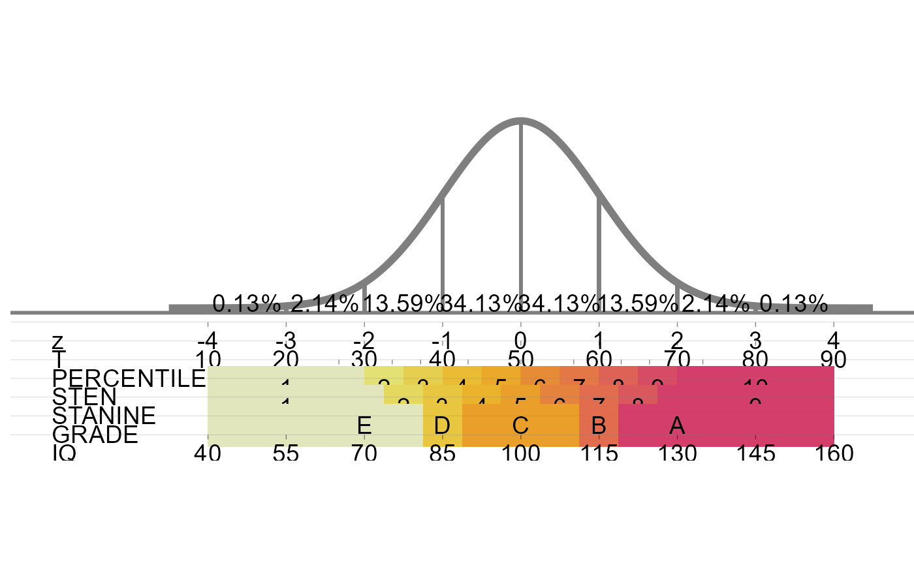
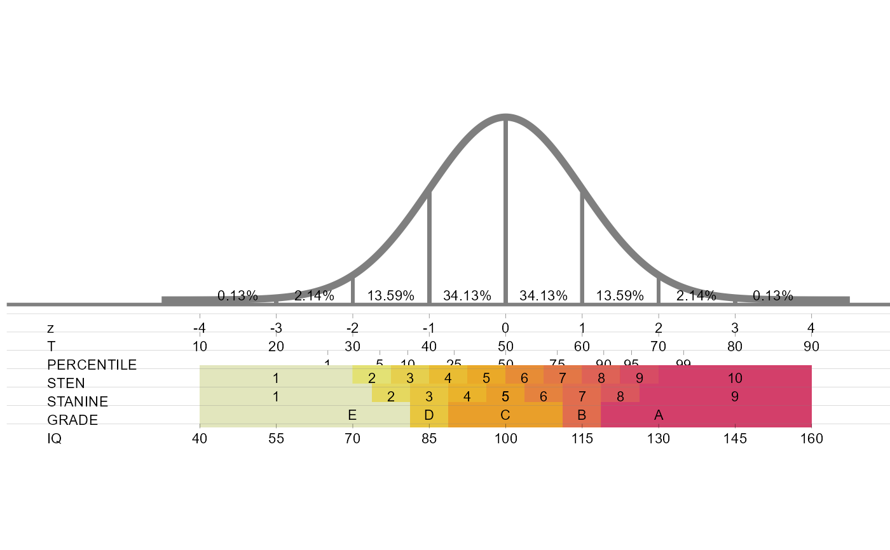

Draws the standard normal curve, marked at every standard deviation with the percentage of cases in each interval, and lines up under it the z, T, percentile, sten, stanine, grade and IQ scales, so that a score on one scale can be read off on the others.
Value
A ggplot object. Print it to draw the chart, or save it with
ggplot2::ggsave(). The chart keeps a fixed aspect ratio and is about 2.5 times as
wide as it is tall, so a figure with those proportions has no empty margins.
Details
All scales are placed on the z axis:
z: standard score, mean 0 and standard deviation 1.
T: \(50 + 10z\).
Percentile: the z values of the 1st, 5th, 10th, 25th, 50th, 75th, 90th, 95th and 99th percentiles.
Sten: ten bands half a standard deviation wide, sten 1 below \(z = -2\) and sten 10 above \(z = 2\) (mean 5.5, standard deviation 2).
Stanine: nine bands half a standard deviation wide, stanine 5 from \(z = -0.25\) to \(z = 0.25\) (mean 5, standard deviation 2).
Grade: groups of stanines, E (1-2), D (3), C (4-6), B (7) and A (8-9).
IQ: \(100 + 15z\).
The coloured sten, stanine and grade bands are drawn as thick lines, whose thickness does
not follow the size of the figure, so in figures of ordinary size they spill over the rows
above them. standard_normal_scales draws the same chart so that it fits any
figure size.
Examples
standard_normal_plot()
#> Warning: Using `size` aesthetic for lines was deprecated in ggplot2 3.4.0.
#> ℹ Please use `linewidth` instead.
#> ℹ The deprecated feature was likely used in the snp package.
#> Please report the issue at <https://github.com/sedzinfo/snp/issues>.

standard_normal_plot(size=3)
